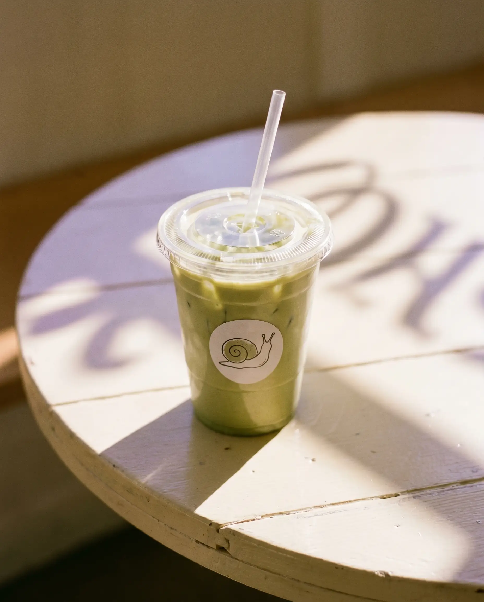
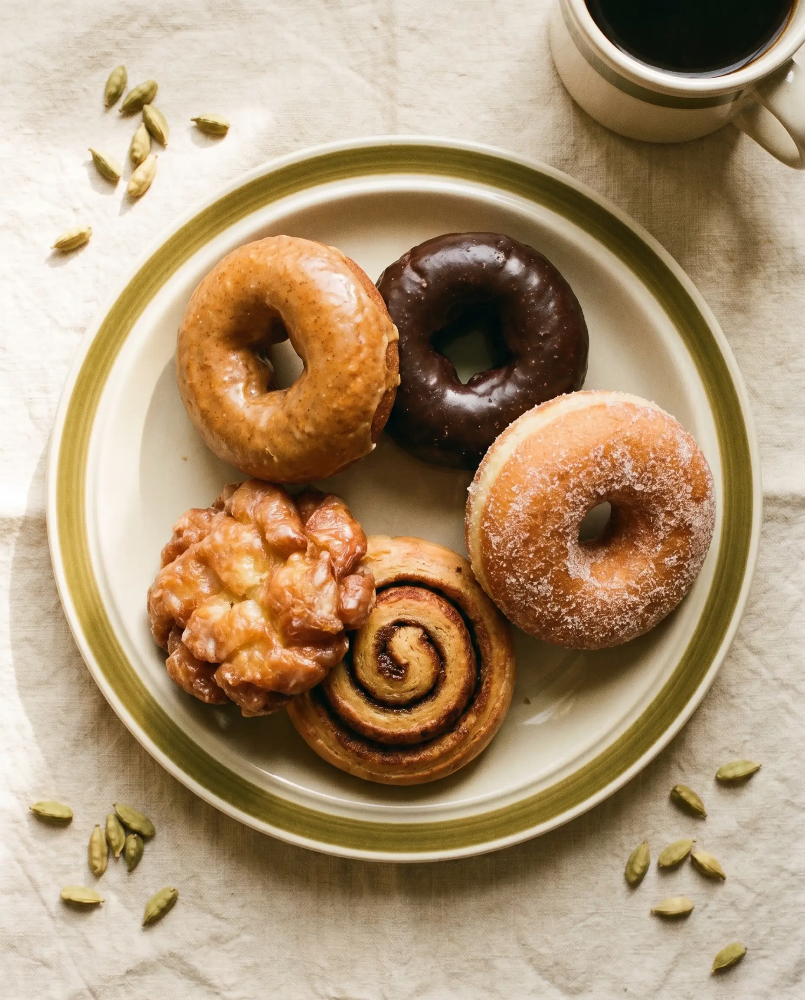

Snail is a tiny neighborhood café in West Central, Fort Wayne — built on the simple idea that good coffee should slow you down, and that a soft chair next to a window is a perfectly acceptable goal for a Tuesday morning.
Because they take their time, carry their home with them, and leave a little shimmer behind everywhere they go. Honestly we just thought it was cute, and then it turned out to be a perfect mascot for what we're trying to do here.
We pour single-origin beans by hand, bake donuts the same morning we sell them, and we'd rather you stay an extra ten minutes than rush you out the door.
"we'd rather you stay ten extra minutes than rush you out."

Our cardamom latte is the one we'll never take off the menu. The slow bar is hand-poured by Nick on a v60, with single-origin Ethiopian or Kenyan beans depending on the week. The matcha? Ceremonial-grade, oat milk by default, lightly sweet because life is already bitter enough.
see what's on todayPumpkin cake, chocolate cake, sour cream — plus an apple fritter that has, on more than one occasion, made grown adults very emotional. Cinnamon buns get glazed at 7am and we keep going until they're gone, which is usually pretty quick.
tip: come early on saturdays.

West Central is one of Fort Wayne's oldest neighborhoods — porches, brick streets, and people who actually know each other. Snail is a love letter to that energy. We hope you'll come over, sit a while, and remember what it feels like to not be in a hurry.
725 Union St · come say hi 🌸
order ahead, walk in, or just sit a while.